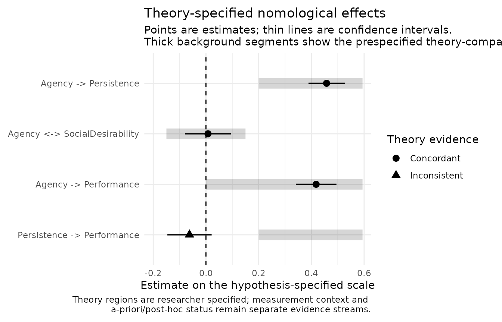
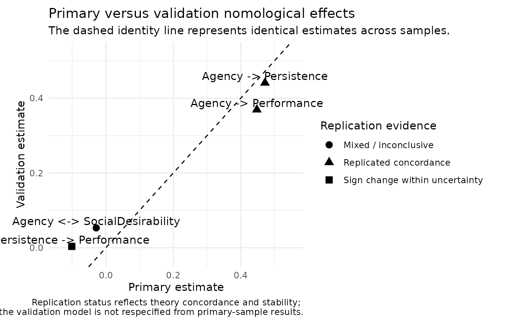

Theory-Specified Nomological Networks with nomologR
Source:vignettes/nomological-network.Rmd
nomological-network.RmdWhy theory comes before the network
nomologR treats nomological evidence as a test of
explicit theoretical predictions, not as a search for
statistically significant relationships.
The intended sequence is:
- establish a defensible measurement model;
- specify the expected relations before inspecting the structural results;
- fit the full model;
- compare estimates and uncertainty with the prespecified theoretical region;
- distinguish theory strain, imprecision, measurement problems, and post-hoc exploration.
The teaching study
nomo_demo_network simulates a validation study of an
Agency measure. Two related constructs were also
measured — Persistence and Social
desirability — along with an observed
Performance outcome.
The population model is known (see
?nomo_demo_network):
- Agency predicts Persistence (standardized coefficient .45);
- Agency predicts Performance (.40);
- Persistence has no direct effect on Performance once Agency is accounted for (0);
- Agency and Social desirability are unrelated (0).
In real research you would not know these values. They are shown here
so you can see how nomologR evidence behaves when a
prediction is right, when it is wrong, and when it is about a negligible
relation.
Specify theory before looking at results
h <- nomo_hypotheses(
"Agency -> Persistence" = positive(min = .20),
"Agency <-> SocialDesirability" = negligible(within = c(-.15, .15)),
"Agency -> Performance" = positive(),
"Persistence -> Performance" = positive(min = .20)
)
h
#> <nomo_hypotheses>
#> 4 theory-specified relation(s)
#>
#> # A tibble: 4 × 6
#> id relation prediction region scale
#> <chr> <chr> <chr> <chr> <chr>
#> 1 H1 Agency -> Persistence positive [0.2, +Inf) standardized
#> 2 H2 Agency <-> SocialDesirability negligible [-0.15, 0.15] standardized
#> 3 H3 Agency -> Performance positive (0, +Inf) standardized
#> 4 H4 Persistence -> Performance positive [0.2, +Inf) standardized
#> origin
#> <chr>
#> 1 a_priori
#> 2 a_priori
#> 3 a_priori
#> 4 a_prioriA -> B means a directed structural path.
A <-> B means an association without asserting causal
direction.
The fourth prediction is plausible-sounding — persistent people perform better — but it is not true in the population model. It is included on purpose.
The negligible-effect region of ±.15 for Social desirability is a
researcher-specified smallest effect size of interest
(SESOI). It must be justified by theory or study design before
the analysis; nomologR never invents one. A bare
negligible() records a theoretical expectation, but
nomologR will refuse to treat p > .05 as
confirmation of negligibility.
Fit the latent network
model <- nomo_model(list(
Agency = c("ag1", "ag2", "ag3", "ag4"),
Persistence = c("pe1", "pe2", "pe3", "pe4"),
SocialDesirability = c("sd1", "sd2", "sd3")
))
net <- nomo_network(
model,
data = nomo_demo_network,
hypotheses = h
)
net
#> <nomo_network>
#> Primary sample: N = 800 | Converged: TRUE
#> Theory relations: 4 | Added transparently to model: 3
#> Measurement context: INFO | no configured measurement-context review signal was triggered
#>
#> # A tibble: 4 × 9
#> id relation prediction theoretical_region estimate
#> <chr> <chr> <chr> <chr> <dbl>
#> 1 H1 Agency -> Persistence positive [0.2, +Inf) 0.458
#> 2 H2 Agency <-> SocialDesirability negligible [-0.15, 0.15] 0.00773
#> 3 H3 Agency -> Performance positive (0, +Inf) 0.418
#> 4 H4 Persistence -> Performance positive [0.2, +Inf) -0.0624
#> ci_lower ci_upper concordance confirmatory_status
#> <dbl> <dbl> <chr> <chr>
#> 1 0.389 0.526 Concordant A priori
#> 2 -0.0794 0.0948 Concordant A priori
#> 3 0.341 0.495 Concordant A priori
#> 4 -0.146 0.0215 Inconsistent A priori
#>
#> Interpretation rule: theory concordance, uncertainty, measurement quality, and replication are distinct evidence streams. Statistical significance alone is not a validity verdict.
nomo_table(net, "fit")
#> # A tibble: 1 × 7
#> chisq df pvalue cfi tli rmsea srmr
#> <dbl> <dbl> <dbl> <dbl> <dbl> <dbl> <dbl>
#> 1 61.6 51 0.147 0.997 0.996 0.0161 0.0205The measurement model supplies only the factor definitions.
Theory-specified paths absent from that model are added transparently,
and the exact fitted syntax and unchanged lavaan fit remain
available in the returned object.
Read relation-level evidence
evidence <- nomo_table(net, "hypotheses")
evidence[, c(
"id", "relation", "theoretical_region", "estimate",
"ci_lower", "ci_upper", "equivalence_supported", "concordance"
)]
#> # A tibble: 4 × 8
#> id relation theoretical_region estimate ci_lower ci_upper
#> <chr> <chr> <chr> <dbl> <dbl> <dbl>
#> 1 H1 Agency -> Persistence [0.2, +Inf) 0.458 0.389 0.526
#> 2 H2 Agency <-> SocialDesirabi… [-0.15, 0.15] 0.00773 -0.0794 0.0948
#> 3 H3 Agency -> Performance (0, +Inf) 0.418 0.341 0.495
#> 4 H4 Persistence -> Performance [0.2, +Inf) -0.0624 -0.146 0.0215
#> # ℹ 2 more variables: equivalence_supported <lgl>, concordance <chr>Reading each row:
-
H1 (
Agency -> Persistence): estimate 0.46, interval [0.39, 0.53], classified concordant with the prediction of at least .20. -
H2
(
Agency <-> SocialDesirability): estimate 0.01. The 90% equivalence interval [-0.07, 0.08] lies inside the ±.15 region, so the negligible prediction is supported by equivalence evidence — not merely by a non-significant p-value. -
H3 (
Agency -> Performance): estimate 0.42, classified concordant. -
H4 (
Persistence -> Performance): estimate -0.06, interval [-0.15, 0.02], classified inconsistent with the predicted region.
Every relation also retains its standard error, p-value, evidence scope, a-priori versus post-hoc provenance, and a measurement-context flag. The goal is not to produce a single “validity score.”
A marginal association is not a structural prediction
Why might a researcher have expected H4? Look at the simple correlation between a Persistence composite and Performance:
persistence_mean <- rowMeans(nomo_demo_network[, c("pe1", "pe2", "pe3", "pe4")])
cor(persistence_mean, nomo_demo_network$Performance)
#> [1] 0.1180501The marginal correlation is positive, because both Persistence and Performance depend on Agency. The theory-specified path asks a different question: does Persistence predict Performance given Agency? It does not. Treating a table of observed correlations as the nomological network would have produced the wrong conclusion.
Negligible predictions and equivalence evidence
For:
negligible(within = c(-.15, .15))
#> $prediction
#> [1] "negligible"
#>
#> $lower
#> [1] -0.15
#>
#> $upper
#> [1] 0.15
#>
#> $lower_inclusive
#> [1] TRUE
#>
#> $upper_inclusive
#> [1] TRUE
#>
#> $scale
#> [1] "standardized"
#>
#> $origin
#> [1] "a_priori"
#>
#> $magnitude_specified
#> [1] TRUE
#>
#> $confirmable
#> [1] TRUE
#>
#> attr(,"class")
#> [1] "nomo_expectation" "list"the researcher has supplied a quantitative negligible-effect region.
With the default equivalence_alpha = .05,
nomo_network() evaluates a 90% equivalence confidence
interval, corresponding to the two one-sided tests procedure. This is
intentionally different from declaring a relation negligible because an
ordinary null-hypothesis test was not significant.
Criterion and predictive evidence
Performance is an observed variable, while Agency is
latent. The evidence table labels such relations explicitly:
evidence[, c("id", "relation", "evidence_scope")]
#> # A tibble: 4 × 3
#> id relation evidence_scope
#> <chr> <chr> <chr>
#> 1 H1 Agency -> Persistence latent_structural
#> 2 H2 Agency <-> SocialDesirability latent_association
#> 3 H3 Agency -> Performance latent_to_observed_outcome
#> 4 H4 Persistence -> Performance latent_to_observed_outcomeObserved outcomes keep their observed-variable estimand;
nomologR does not silently insert measurement-error
corrections.
Measurement context
nomo_table(net, "measurement")
#> # A tibble: 1 × 8
#> attention converged latent_constructs loading_review_flags
#> <chr> <lgl> <int> <int>
#> 1 info TRUE 3 0
#> # ℹ 4 more variables: negative_variance_flags <int>,
#> # global_fit_review_flags <int>, engine_warning_count <int>,
#> # observation <chr>A relation can look inconsistent with theory because the estimated relationship truly differs from the prediction, or because weak measurement, improper solutions, poor fit, or large uncertainty limit what the structural result can say. The measurement context stays beside the theory evidence so the two are not confused.
Calibration and validation
An internal split can be created explicitly:
s <- nomo_split(nomo_demo_network, validation_prop = .40, seed = 2026)
net_rep <- nomo_network(
model,
data = s,
hypotheses = h
)
replication <- nomo_table(net_rep, "replication")
replication[, c(
"id", "relation", "primary_estimate", "validation_estimate",
"validation_concordance", "replication_status"
)]
#> # A tibble: 4 × 6
#> id relation primary_estimate validation_estimate validation_concordance
#> <chr> <chr> <dbl> <dbl> <chr>
#> 1 H1 Agency -> P… 0.472 0.441 concordant
#> 2 H2 Agency <-> … -0.0285 0.0531 directionally_concord…
#> 3 H3 Agency -> P… 0.448 0.369 concordant
#> 4 H4 Persistence… -0.101 0.00364 direction_concordant_…
#> # ℹ 1 more variable: replication_status <chr>The calibration and validation subsets receive the same
prespecified fitted model; nomologR does not
respecify the validation model to rescue a primary result. Reading the
statuses:
- H1 and H3 are replicated_concordance and replicated_concordance.
- H2 is mixed_or_inconclusive: with only 320 validation cases, the equivalence interval is too wide to confirm negligibility. Splitting a sample buys independence at the cost of precision.
- H4 is sign_change_within_uncertainty. The population path is zero, and the two point estimates happen to differ in sign. Here neither sample’s confidence interval excludes zero, so the sign change is attributed to sampling uncertainty rather than to a substantive discrepancy.
A change in sign between samples needs care. Estimates scattered
around a null relation differ in sign about half the time, so
nomologR does not call a sign change a
reversal from the point estimates. It reads the 95
percent confidence intervals:
| Status | Intervals | Meaning |
|---|---|---|
sign_reversal |
Both exclude zero, on opposite sides | Each sample on its own supports a different direction |
direction_not_replicated |
Exactly one excludes zero | The other sample does not support that direction, nor establish the opposite |
sign_change_within_uncertainty |
Neither excludes zero | Neither sample distinguishes the relation from zero |
None of these turns a non-significant path into evidence of
no relation. That claim needs a
negligible(within = ...) prediction with an equivalence
region, the kind of prediction H2 makes (Lakens, Scheel, & Isager,
2018).
External validation data can instead be supplied with
validation_data =, which is generally stronger evidence
than an internal split.
Figures
plot(net, type = "effects")
plot(net_rep, type = "replication")
These are evidence summaries, not automated theory verdicts.
Interpretation rule
nomologR keeps measurement evidence, theory
concordance, uncertainty, replication, and researcher provenance visible
at the same time. A supported prediction strengthens the
validity argument for a particular interpretation of scores; an
unsupported one is information about the theory, the measure, or
both.
Research basis
The nomological network as the core of construct validity comes from
Cronbach and Meehl (1955), and convergent and discriminant correlation
patterns from Campbell and Fiske (1959). Contemporary practice separates
the measurement model from structural relations (Anderson & Gerbing,
1988), treats validity as an argument about score interpretation
(Messick, 1995), evaluates negligible predictions with equivalence
procedures (Schuirmann, 1987; Lakens, Scheel, & Isager, 2018), and
distinguishes prespecified from post-hoc predictions (Nosek et al.,
2018). Full references are in ?nomo_network and the research basis article.